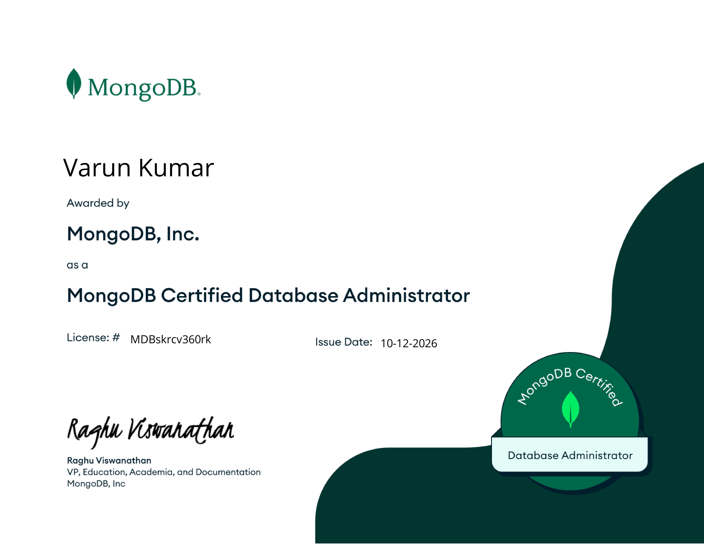
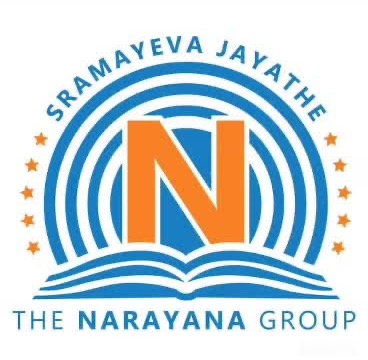

PDF RAG Intelligence System
A retrieval-augmented generation app for general questions, clinical reports, and legal documents, with an evaluation dashboard and a filter for noisy retrieved context.
A retrieval-augmented generation app for general questions, clinical reports, and legal documents, with an evaluation dashboard and a filter for noisy retrieved context.
A Python pipeline for NSE stock data, combining rolling market indicators with Isolation Forest to flag unusual activity and explore results in a dashboard.
A lightweight tool that classifies incoming support requests, suggests a route, and lets staff review or override predictions. Includes a framework to compare routing time.

Completed the MongoDB Database Administrator Exam learning path and earned 15 skill badges. Practised CRUD operations, aggregation pipelines, schema design, indexing, replica sets, access control, monitoring, backup, and recovery concepts.
B.Tech, Computer Science and Engineering
CGPA: 8.08 / 10
Class XII - PCM
Marks: 961 / 1000Class X- Science
Marks: 600 / 600I've completed several certifications at university so far, and I'm excited to keep learning and advancing my skills.
Oct 2026
Validated skills in MongoDB database administration, core database concepts, optimization, and problem-solving, including installation, configuration, monitoring, performance optimization, and backup strategies.
View CredentialSep 2025
Completed a comprehensive Cloud Architecting program, gaining expertise in designing, deploying, and managing scalable and secure cloud solutions, including cloud architecture patterns, best practices, and cost optimization strategies.
View CredentialSep 2025
Completed AWS Academy Cloud Foundations program, gaining comprehensive knowledge of Amazon Web Services cloud computing fundamentals, including core AWS services, security, architecture, and pricing models.
View CredentialApril 2025
Completed an online course authorized by Stanford University and DeepLearning.AI, gaining hands-on experience in building and training predictive and binary classification models using Python, NumPy, and Scikit-learn.
View CredentialJan 2025
Completed an industry-recognized course authorized by Google, developing proficiency in Python scripting, automation, and core data structures including strings, lists, and dictionaries.
View CredentialCONTACT
Open to connecting about data, analytics, and software projects.